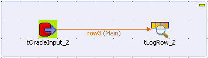
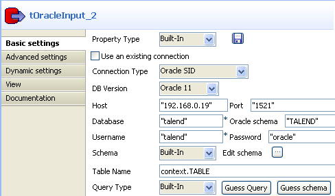
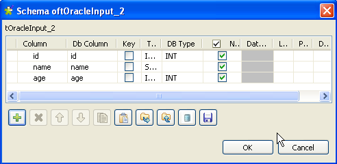
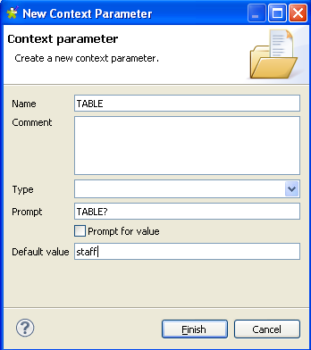
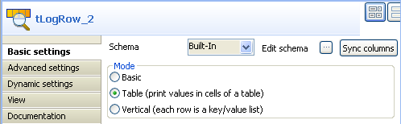

|
Component family |
Databases/Oracle | ||||
|
Function |
tOracleInput reads a database and extracts fields based on a query. | ||||
|
Purpose |
tOracleInput executes a DB query with a strictly defined order which must correspond to the schema definition. Then it passes on the field list to the next component via a Main row link. | ||||
|
Basic settings |
Property type |
Either Built-in or Repository. | |||
|
|
|
Built-in: No property data stored centrally. | |||
|
|
|
Repository: Select the repository file in which the properties are stored. The fields that follow are completed automatically using the data retrieved. | |||
|
|
|
Click this icon to open a database connection wizard and store the database connection parameters you set in the component Basic settings view. For more information about setting up and storing database connection parameters, see Talend Open Studio User Guide. | |||
|
|
Use an existing connection |
Select this check box when using a configured tOracleConnection component.
| |||
|
|
Connection type |
Drop-down list of available drivers: Oracle OCI: Select this connection type to use Oracle Call Interface with a set of C-language software APIs that provide an interface to the Oracle database. Oracle RAC: Select this connection type to access a clustered database. Oracle Service Name: Select this connection type to use the TNS alias that you give when you connect to the remote database. WALLET: Select this connection type to store credentials in an Oracle wallet. Oracle SID: Select this connection type to uniquely identify a particular database on a system. | |||
|
|
DB Version |
Select the Oracle version in use. | |||
|
|
Host |
Database server IP address. | |||
|
|
Port |
Listening port number of DB server. | |||
|
|
Database |
Name of the database. | |||
|
|
Oracle schema |
Oracle schema name. | |||
|
|
Username and Password |
DB user authentication data. | |||
|
|
Schema and Edit Schema |
A schema is a row description, i.e., it defines the number of fields to be processed and passed on to the next component. The schema is either Built-in or stored remotely in the Repository.
| |||
|
|
|
Built-in: The schema is created and stored locally for this component only. Related topic: see Talend Open Studio User Guide. | |||
|
|
|
Repository: The schema already exists and is stored in the Repository, hence can be reused. Related topic: see Talend Open Studio User Guide. | |||
|
|
Table name |
Database table name. | |||
|
|
Query type and Query |
Enter your DB query paying particularly attention to properly sequence the fields in order to match the schema definition. | |||
|
Advanced settings |
tStatCatcher Statistics |
Select this check box to collect log data at the component level. | |||
|
|
Use cursor |
When selected, helps to decide the row set to work with at a time and thus optimize performance. | |||
|
|
Trim all the String/Char columns |
Select this check box to remove leading and trailing whitespace from all the String/Char columns. | |||
|
|
Trim column |
Remove leading and trailing whitespace from defined columns. | |||
|
|
No null values |
Check this box to improve the performance if there are no null values. | |||
|
Usage |
This component covers all possible SQL queries for Oracle databases. | ||||
![[Note]](../images/note.png)
In this scenario, we will read a table from an Oracle database, using a context parameter to refer to the table name.
Drop tOracleInput and tLogRow from the Palette onto the workspace.
Link tOracleInput to tLogRow using a Row > Main connection.

Double-click tOracleInput to open its Basic Settings view in the Component tab.
In the Host field, enter the Oracle database serverse's IP address, "192.168.0.19" in this example.
In the Port field, enter the port number, "1521" in this example.
In the Database field, enter the database name, "talend" in this example.
In the Oracle schema field, enter the Oracle schema name, "TALEND" in this example.
In the Username and Password fields, enter the authentication details, respectively "talend" and "oracle" in this example.
Set the Schema as Built-In and click Edit schema to define the desired schema.
The schema editor opens:
Click the
 button to add the rows that you will use to
define the schema, three columns in this example:
id, name and
age.
button to add the rows that you will use to
define the schema, three columns in this example:
id, name and
age.Under Column, click the fields to enter the corresponding column names.
Click the fields under Type to define the type of data.
Click OK to close the schema editor.
Put the cursor in the Table Name field and press F5 for context parameter setting.
For more information about context settings, see the Talend Open Studio User Guide.
Keep the default setting in the Name field and type in the name of the database table in the Default value field, staff in this use case.
Click Finish to validate the setting.
The context parameter context.TABLE automatically appears in the Table Name field.
In the Query type list, select Built-In. Then, click Guess Query to get the query statement.
"SELECT TALEND."+context.TABLE+".id, TALEND."+context.TABLE+".name, TALEND."+context.TABLE+".age FROM TALEND."+context.TABLE
Double-click tLogRow to set its Basic Settings in the Component tab.
In the Mode area, select Table (print values in cells of a table) for a better display of the results.
Save the Job.